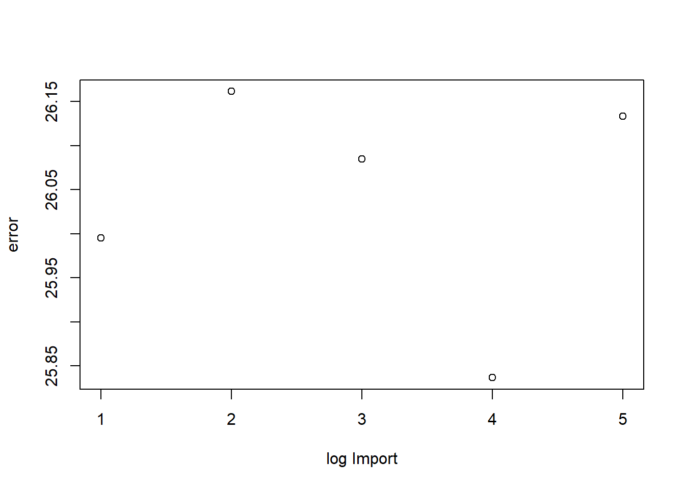

library(tidyverse)
library(readxl)
library(WDI)Pengaruh Ekspor dan Impor terhadap PDB Indonesia pada tahun 2017 - 2021
Metode Penelitian Politeknik APP Jakarta
1 Pendahuluan
1.1 Latar belakang
Pada dasarnya kegiatan ekspor dan impor merupakan kegiatan yang berpengaruh dengan keadaan ekonomi suatu negara.Tetapi seberapa besar pengaruh tersebut terhadap suatu negara. Atas dasar tersebut penulis ingin membuat regresi agar melihat seberapa besar pengaruh ekspor dan impor terhadap PDB khususnya negara Indonesia
1.2 Ruang lingkup
penelitian ini terbatas pada data PDB,nilai impor, dan juga nilai ekspor Indonesia pada tahun 2017 sampai 2021 ### Rumusan masalah
Apakah kegiatan ekspor dan impor mempengaruhi PDB ? seberapa besarkah pengaruhnya kegiatan eskpor dan impor mempengaruhi PDB?
1.3 Tujuan dan manfaat penelitian
tujuan daripada penelitian ini adalah sebagai bahan referensi pemerintah untuk pengambilan kebijakan - kebijakan khususnya kebijakan ekspor dan impor Indonesia. dan juga sebagai bahan referensi pihak lainnya agar menjadi referensi dalam studi mereka. ### Package
Adapun packages yang digunakan antara lain sebagai berikut:
2 Studi pustaka
Pengertian Ekspor
Amir (1992) mendefinisikan bahwa kegiatan ekspor di artikan dengan pengeluaran barang – barang dari peredaran masyarakat dan mengirimkan keluar negeri sesuai dengan ketentuan pemerintah dan mengharapkan pembayaran dalam bentuk valuta asing.
Pengertian Impor
Impor adalah kegiatan perdagangan internasional yang meliputi kegiatan pengiriman suatu barang dari luar negeri ke seluruh pelabuhan yang ada diseluruh wilayah Indonesia. Kegiatan impor dilakukan guna memenuhi kebutuhan dalam negeri baik berupa pangan maupun untuk kegiatan industri dan lain-lain.
Produk Domestik Bruto (PDB)
Produk Domestik Bruto (PDB) adalah jumlah nilai tambah barang dan jasa yang dihasilkan dari seluruh kegiatan perekonomian di seluruh negara dalam tahun tertentu atau periode tertentu dan biasanya satu tahun
3 Metode penelitian
Penelitian ini menggunakan metode kuantitatif dengan menggunakan regresi multivariat yang akan menggunakan R studio
3.1 Data
Berikut adalah data yang digunakan dalam melakukan regresi
Data Impor Indonesia tahun 2017 - 2021
Data PDB indonesia dari tahun 2017 - 2021
Data Ekspor Indonesia tahun 2017 - 2021 ### Metode analisis
Metode yang dipilih adalah regresi univariat dengan 2 variabel independen. Penelitian ini merbaksud mencari hubungan antara PDB Indonesia dengan Ekspor dan impor . Spesifikasi yang dilakukan adalah:
\[ y_{t}=\beta_0 + \beta_1 x_1+\beta_2x_2+\mu_t \] di mana \(y_t\) adalah PDB Indonesia , \(x_1\) adalah Ekspor Indonesia.dan \(x_2\) adalah Impor Indonesia
4 Pembahasan
4.1 Analisis masalah
Hasil regresinya adalah
library(WDI)
indi<-c(
"PDB"="NY.GDP.MKTP.CD",
"Import"="NE.IMP.GNFS.CD",
"Export"="NE.EXP.GNFS.CD"
)
dat<-WDI(
country="IDN",
indicator=indi,
start=2017,end=2021,
)
reg<-lm(data=dat,PDB~Import+Export)
summary(reg)
Call:
lm(formula = PDB ~ Import + Export, data = dat)
Residuals:
1 2 3 4 5
-5.619e+10 -2.752e+10 5.938e+10 1.423e+10 1.009e+10
attr(,"label")
[1] "GDP (current US$)"
Coefficients:
Estimate Std. Error t value Pr(>|t|)
(Intercept) 7.393e+11 2.651e+11 2.788 0.108
Import -1.124e+00 1.951e+00 -0.576 0.623
Export 2.691e+00 1.879e+00 1.433 0.288
Residual standard error: 6.223e+10 on 2 degrees of freedom
Multiple R-squared: 0.5861, Adjusted R-squared: 0.1722
F-statistic: 1.416 on 2 and 2 DF, p-value: 0.4139dari data diatas data yang dapat dibaca terlalu panjang.maka dari itu data data tersebut di log menggunakan skrip berikut.
library(WDI)
indi<-c(
"PDB"="NY.GDP.MKTP.CD",
"Import"="NE.IMP.GNFS.CD",
"Export"="NE.EXP.GNFS.CD"
)
dat<-WDI(
country="IDN",
indicator=indi,
start=2017,end=2021,
)
dat$LPDB<-log(dat$PDB)
dat$Limport<-log(dat$Import)
dat$Lexport<-log(dat$Export)
reg<-lm(data=dat,LPDB~Limport+Lexport)
summary(reg)
Call:
lm(formula = LPDB ~ Limport + Lexport, data = dat)
Residuals:
1 2 3 4 5
-0.05406 -0.02596 0.05539 0.01366 0.01097
attr(,"label")
[1] "GDP (current US$)"
Coefficients:
Estimate Std. Error t value Pr(>|t|)
(Intercept) 19.3531 6.4325 3.009 0.095 .
Limport -0.2322 0.3884 -0.598 0.611
Lexport 0.5522 0.4176 1.322 0.317
---
Signif. codes: 0 '***' 0.001 '**' 0.01 '*' 0.05 '.' 0.1 ' ' 1
Residual standard error: 0.05904 on 2 degrees of freedom
Multiple R-squared: 0.5489, Adjusted R-squared: 0.09782
F-statistic: 1.217 on 2 and 2 DF, p-value: 0.4511Selanjutnya adalah melakukan plot dengan error menggunakan skrip
library(WDI)
library(tidyverse)
dat<-WDI(
country="IDN",
indicator=indi,
start=2017,end=2021,
)
dat$LPDB<-log(dat$PDB)
dat$Limport<-log(dat$Import)
dat$Lexport<-log(dat$Export)
plot(dat$Lexport,dat$m,xlab="log Export",ylab="error")plot(dat$Limport,dat$m,xlab="log Import",ylab="error")
Dari data diatas hasilnya adalah
jika nilai impor Indonesia naik 1 juta USD maka PDB Indonesia akan berkurang sebesar 0,2322 triliun USD dengan nilai ekspor yang sama
jika nilai ekspor Indonesia naik 1 juta USD maka PDB Indonesia akan bertambah sebesar 0.5522 triliun USD dengan nilai impor yang sama
3.pengaruh ekspor dan impor terhadap PDB Indonesia tidak siginifkan
5 Kesimpulan
Dari hasil analisis di atas dapat disimpulkan bahwa kegiatan ekspor dan impor mempengaruhi PDB Indonesia. tetapi hasil yang didapat tidak signifikan. Saran dari penulis untuk para penulis yang lain adalah agar menggunakan variabel data yang lebih banyak seperti data perjanjian ekspor dan impor, jarak antar negara, dan lain lain. Dan juga gunakan series data yang lebih panjang
6 Referensi
Gupta, K. (n.d.). Krisna ‘imed’ Gupta. https://www.krisna.or.id/courses/metopel/
Silaban, P. S. M. J., & Rejeki, R. (2020). PENGARUH INFLASI, EKSPOR DAN IMPOR TERHADAP PDB DI INDONESIA PERIODE 2015 – 2018. Jurnal Niagawan, 09(01), 56–64.
Juniantara, I. P. K., & Budhi, M. K. S. (2012). PENGARUH EKSPOR, IMPOR DAN KURS TERHADAP CADANGAN DEVISA NASIONAL PERIODE 1999-2010. Jurusan Ekonomi Pembangunan Fakultas Ekonomi Universitas Udayana, 01(01), 32–38.